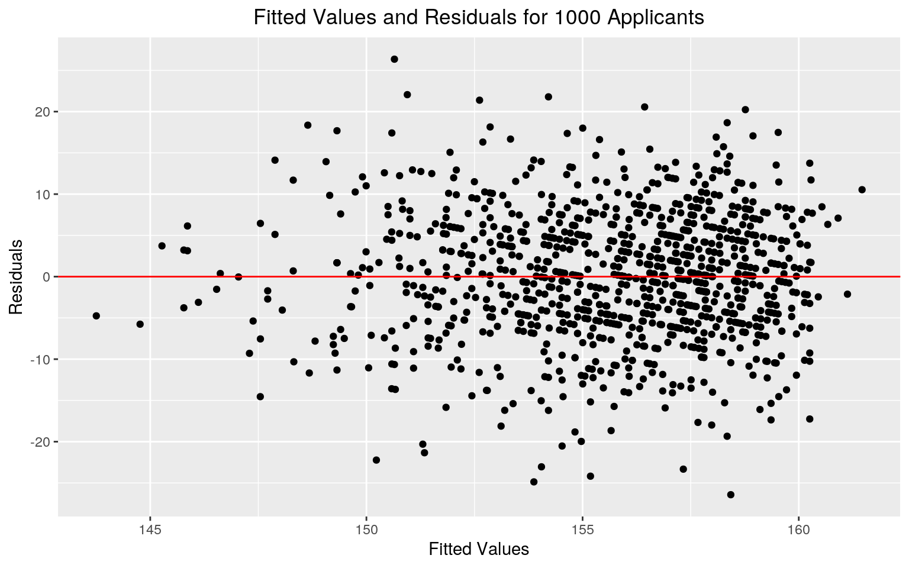

library(readr)
library(dplyr)
library(ggplot2)
library(rstatix)
library(sandwich)
library(lmtest)
library(plotROC)
library(glmnet)
class_diag<-function(probs,truth){
tab<-table(factor(probs>.5,levels=c("FALSE","TRUE")),truth)
acc=sum(diag(tab))/sum(tab)
sens=tab[2,2]/colSums(tab)[2]
spec=tab[1,1]/colSums(tab)[1]
ppv=tab[2,2]/rowSums(tab)[2]
f1=2*(sens*ppv)/(sens+ppv)
if(is.numeric(truth)==FALSE & is.logical(truth)==FALSE){
truth<-as.numeric(truth)-1}
#CALCULATE EXACT AUC
ord<-order(probs, decreasing=TRUE)
probs <- probs[ord]; truth <- truth[ord]
TPR=cumsum(truth)/max(1,sum(truth))
FPR=cumsum(!truth)/max(1,sum(!truth))
dup<-c(probs[-1]>=probs[-length(probs)], FALSE)
TPR<-c(0,TPR[!dup],1); FPR<-c(0,FPR[!dup],1)
n <- length(TPR)
auc<- sum( ((TPR[-1]+TPR[-n])/2) * (FPR[-1]-FPR[-n]) )
data.frame(acc,sens,spec,ppv,f1,auc)
}
lawschool <- read_csv("lawschool.csv")
head(lawschool)## # A tibble: 6 x 8
## LSAT GPA Race resident college Year Gender admit
## <dbl> <dbl> <chr> <dbl> <chr> <dbl> <dbl> <dbl>
## 1 156 3.71 White 0 Arizona State 2006 0 1
## 2 161 3.85 White 0 Arizona State 2006 0 1
## 3 160 3.2 White 0 Arizona State 2006 1 0
## 4 132 2.95 <NA> 1 Arizona State 2006 1 0
## 5 159 3.49 White 0 Arizona State 2006 1 0
## 6 154 2.81 White 0 Arizona State 2006 1 0LS <- lawschool %>% mutate(resident = recode(resident, "0" = "No", "1" = "Yes" ))
LS <- LS %>% mutate(Gender = recode(Gender, "0" = "female", "1" = "male" ))
LS <- LS %>% mutate(admit = recode(admit, "0" = "denied", "1" = "admitted" ))
LS <- LS %>% na.omit()
LS %>% group_by(college) %>% count()## # A tibble: 13 x 2
## # Groups: college [13]
## college n
## <chr> <int>
## 1 Arizona State 4755
## 2 Buffalo 2404
## 3 George Mason 9900
## 4 Hawaii 1191
## 5 Houston 6174
## 6 Idaho 1194
## 7 Louisiana State 2272
## 8 Michigan 8998
## 9 Missouri at Kansas City 2209
## 10 Nevada Las Vegas 3381
## 11 North Carolina 6258
## 12 Northern Illinois 3318
## 13 Ohio State 3765#ASSUMPTIONS
LS_samp<-LS%>%sample_n(4999)
group <- LS_samp$Race
DVs <- LS_samp %>% select(LSAT,GPA)
sapply(split(DVs,group), mshapiro_test)## Asian Black Hispanic White
## statistic 0.9975175 0.9945782 0.995756 0.9843502
## p.value 0.5150727 0.0864433 0.3760175 2.512437e-19When testing for normality within each group, all racial identifications had p-values less than 0.05; therefore, the multivariate normality assumption is not satisfied.
#TESTS
LSmanova <- manova(cbind(LSAT,GPA)~Race,data=LS)
summary(LSmanova) #1 MANOVA## Df Pillai approx F num Df den Df Pr(>F)
## Race 3 0.13221 1316.9 6 111630 < 2.2e-16 ***
## Residuals 55815
## ---
## Signif. codes: 0 '***' 0.001 '**' 0.01 '*' 0.05 '.' 0.1
' ' 1summary.aov(LSmanova) #2 ANOVAS## Response LSAT :
## Df Sum Sq Mean Sq F value Pr(>F)
## Race 3 468246 156082 2489.5 < 2.2e-16 ***
## Residuals 55815 3499399 63
## ---
## Signif. codes: 0 '***' 0.001 '**' 0.01 '*' 0.05 '.' 0.1
' ' 1
##
## Response GPA :
## Df Sum Sq Mean Sq F value Pr(>F)
## Race 3 513.7 171.237 994.67 < 2.2e-16 ***
## Residuals 55815 9608.9 0.172
## ---
## Signif. codes: 0 '***' 0.001 '**' 0.01 '*' 0.05 '.' 0.1
' ' 1pairwise.t.test(LS$LSAT,LS$Race, p.adj="none") #12 t-tests##
## Pairwise comparisons using t tests with pooled SD
##
## data: LS$LSAT and LS$Race
##
## Asian Black Hispanic
## Black < 2e-16 - -
## Hispanic < 2e-16 < 2e-16 -
## White 3.9e-10 < 2e-16 < 2e-16
##
## P value adjustment method: nonepairwise.t.test(LS$GPA,LS$Race, p.adj="none")##
## Pairwise comparisons using t tests with pooled SD
##
## data: LS$GPA and LS$Race
##
## Asian Black Hispanic
## Black < 2e-16 - -
## Hispanic 5.2e-15 < 2e-16 -
## White < 2e-16 < 2e-16 < 2e-16
##
## P value adjustment method: none1 - (0.95^15)## [1] 0.5367088.05/15## [1] 0.003333333The overall MANOVA test yields a p-value less than 0.05; therefore, for at least one numeric variable, the mean differs for at least one racial identification.
For both variables, at least one mean for racial identification differs as indicated by low p-values (p <0.05).
15 tests were completed in total, and the probability at least one Type 1 error occurred is 0.537. The boneferroni adjusted significance level is 0.00333. Using this adjusted alpha value, all racial identifications have significant differences in GPA and LSAT means.
t.test(GPA ~ Gender, data = LS, var.equal = F)##
## Welch Two Sample t-test
##
## data: GPA by Gender
## t = 22.423, df = 53741, p-value < 2.2e-16
## alternative hypothesis: true difference in means is not
equal to 0
## 95 percent confidence interval:
## 0.07356164 0.08765357
## sample estimates:
## mean in group female mean in group male
## 3.366822 3.286214set.seed(348)
LS%>%group_by(Gender)%>%
summarize(GPAmeans=mean(GPA))%>%summarize(`mean_diff`=diff(GPAmeans))## # A tibble: 1 x 1
## mean_diff
## <dbl>
## 1 -0.0806GPAGender <- vector()
for(i in 1:1000){
GPArand<-data.frame(GPA=sample(LS$GPA),Gender=LS$Gender)
GPAGender[i]<-mean(GPArand[GPArand$Gender=="male",]$GPA)-
mean(GPArand[GPArand$Gender=="female",]$GPA)}
mean(GPAGender> 0.08060761 | GPAGender < -0.08060761 )## [1] 0vertical.lines <- c(0.08060761, -0.08060761)
wrapper <- function(x, ...)
{paste(strwrap(x, ...), collapse = "\n")}
my_title_manual = "Mean Differences in GPA between Randomized Groups of Male and Female Applicants"
GG <- GPAGender %>% as.data.frame()
ggplot(GG,aes(x = .)) + geom_histogram() + labs(title =wrapper(my_title_manual,50), x = "Mean Differences in GPA", y = "Frequencies") + theme(plot.title = element_text(hjust = 0.5)) +geom_vline(xintercept = vertical.lines, color="red")The null hypothesis states the mean difference in GPA values between male and female applicants is 0. The alternative hypothesis states the mean difference in GPA values between male and female applicants is not equal to 0.
The resulting p-value of the randomization test is 0. Therefore, we reject the null hypothesis and assume the mean difference between male and female applicants is not equal to 0. A p-value of exactly 0 indicates 1000 randomized calculations of the test statistic did not result in a mean difference as large as the one observed as the overall mean difference in GPA between male and female applicants.
#TEST
LS$GPA_c <- LS$GPA - mean(LS$GPA)
LSfit <- lm(LSAT ~ GPA_c*Gender, data = LS)
summary(LSfit)##
## Call:
## lm(formula = LSAT ~ GPA_c * Gender, data = LS)
##
## Residuals:
## Min 1Q Median 3Q Max
## -33.973 -5.108 0.135 5.386 32.899
##
## Coefficients:
## Estimate Std. Error t value Pr(>|t|)
## (Intercept) 154.09876 0.04990 3087.89 <2e-16 ***
## GPA_c 8.52478 0.12024 70.90 <2e-16 ***
## Gendermale 2.62958 0.06658 39.50 <2e-16 ***
## GPA_c:Gendermale -2.13717 0.15736 -13.58 <2e-16 ***
## ---
## Signif. codes: 0 '***' 0.001 '**' 0.01 '*' 0.05 '.' 0.1
' ' 1
##
## Residual standard error: 7.769 on 55815 degrees of
freedom
## Multiple R-squared: 0.1508, Adjusted R-squared: 0.1508
## F-statistic: 3305 on 3 and 55815 DF, p-value: < 2.2e-16154.099 is the predicted LSAT score for a female applicant with an average GPA. When controlling for Gender, for every one unit increase in GPA, there is an 8.525 point increase in LSAT score, on average. Male applicants with average GPAs have predicted LSAT scores that are 2.629 points greater than female applicants with average GPAs. The slope of GPA on LSAT score for male applicants is 2.137 less than for female applicants.
#ASSUMPTIONS
#HOMOSKEDASTICITY
bptest(LSfit)##
## studentized Breusch-Pagan test
##
## data: LSfit
## BP = 190.62, df = 3, p-value < 2.2e-16#NORMALITY
LSresids<-LSfit$residuals
ks.test(LSresids, "pnorm", mean=0, sd(LSresids))##
## One-sample Kolmogorov-Smirnov test
##
## data: LSresids
## D = 0.0081771, p-value = 0.001146
## alternative hypothesis: two-sided#LINEARITY
LS_samp2<-LS%>%sample_n(1000)
LSresids2<-lm(LSAT ~ GPA_c*Gender, data = LS_samp2)$residuals
LSfitted2<-lm(LSAT ~ GPA_c*Gender, data = LS_samp2)$fitted.values
ggplot()+geom_point(aes(LSfitted2,LSresids2))+geom_hline(yintercept=0, color='red') + labs(title = "Fitted Values and Residuals for 1000 Applicants", x = "Fitted Values", y = "Residuals") + theme(plot.title = element_text(hjust = 0.5))
The homoskedasticity assumption is violated as demonstrated by the low p-value result of the Breush-Pagan test. The normality assumption is violated due to the low p-value yielded by the Kolmogorov-Smirnov test. The linearity assumption is fulfilled due to the random scattering of points presented in the graph of fitted values and residuals of a random subset of 1000 applicants. Due to the failure of the dataset to meet all assumptions, the subsequent linear regression analysis does not fully and accurately describe the dataset.
#RECALCULATION WITH ROBUST SEs
coeftest(LSfit, vcov = vcovHC(LSfit))##
## t test of coefficients:
##
## Estimate Std. Error t value Pr(>|t|)
## (Intercept) 154.098761 0.050371 3059.298 < 2.2e-16 ***
## GPA_c 8.524780 0.123717 68.906 < 2.2e-16 ***
## Gendermale 2.629579 0.066563 39.505 < 2.2e-16 ***
## GPA_c:Gendermale -2.137169 0.164097 -13.024 < 2.2e-16
***
## ---
## Signif. codes: 0 '***' 0.001 '**' 0.01 '*' 0.05 '.' 0.1
' ' 1#GRAPHS
ggplot(LS, aes(x=GPA, y=LSAT,group=Gender))+geom_point(aes(color=Gender), size = 0.7)+
geom_smooth(method="lm",aes(color = Gender))+ labs(title = "Linear Regression of GPA and Gender on LSAT Scores") + theme(plot.title = element_text(hjust = 0.5))ggplot(LS, aes(x=GPA, y=LSAT,group=Gender))+
geom_smooth(method="lm",aes(color = Gender)) + labs(title = "Isolated Linear Regression Lines") + theme(plot.title = element_text(hjust = 0.5))When recomputing regression results with robust standard errors, all estimates remained the same in value and significance. The robust SEs increased in value for all variables except Gendermale, which decreased slightly. All estimates have p-values less than 0.05; therefore, Gender, GPA, and their interaction explain a significant amount of variation in LSAT scores. 15.08% of variation in LSAT scores can be explained by variation in Gender and GPA.
summary(LSfit)##
## Call:
## lm(formula = LSAT ~ GPA_c * Gender, data = LS)
##
## Residuals:
## Min 1Q Median 3Q Max
## -33.973 -5.108 0.135 5.386 32.899
##
## Coefficients:
## Estimate Std. Error t value Pr(>|t|)
## (Intercept) 154.09876 0.04990 3087.89 <2e-16 ***
## GPA_c 8.52478 0.12024 70.90 <2e-16 ***
## Gendermale 2.62958 0.06658 39.50 <2e-16 ***
## GPA_c:Gendermale -2.13717 0.15736 -13.58 <2e-16 ***
## ---
## Signif. codes: 0 '***' 0.001 '**' 0.01 '*' 0.05 '.' 0.1
' ' 1
##
## Residual standard error: 7.769 on 55815 degrees of
freedom
## Multiple R-squared: 0.1508, Adjusted R-squared: 0.1508
## F-statistic: 3305 on 3 and 55815 DF, p-value: < 2.2e-16coeftest(LSfit, vcov = vcovHC(LSfit))##
## t test of coefficients:
##
## Estimate Std. Error t value Pr(>|t|)
## (Intercept) 154.098761 0.050371 3059.298 < 2.2e-16 ***
## GPA_c 8.524780 0.123717 68.906 < 2.2e-16 ***
## Gendermale 2.629579 0.066563 39.505 < 2.2e-16 ***
## GPA_c:Gendermale -2.137169 0.164097 -13.024 < 2.2e-16
***
## ---
## Signif. codes: 0 '***' 0.001 '**' 0.01 '*' 0.05 '.' 0.1
' ' 1LSsamp_distn<-replicate(1000, {
LSboot_dat <- sample_frac(LS, replace=T)
LSbootfit <- lm(LSAT ~ GPA_c*Gender, data = LSboot_dat)
coef(LSbootfit)
})
LSsamp_distn %>% t %>% as.data.frame %>% summarize_all(sd)## (Intercept) GPA_c Gendermale GPA_c:Gendermale
## 1 0.05045635 0.1207803 0.06604807 0.1629774In comparison to the original SEs, the bootstrapped SEs for intercept (SE = 0.0508), the interaction between GPA and Gender male (SE = 0.166), and mean-centered GPA (SE = 0.122) are greater. However, the SE for Gender male (SE = 0.0662) is less than the SE value for the original linear regression.
In comparison to robust SEs, the bootstrapped SEs for intercept, mean-centered GPA, and the interaction between GPA and Gender male are greater in value. The bootstrapped SE for Gendermale is less.
LS1 <- LS %>% mutate(BinaryAdmit=ifelse(admit=="admitted",1,0))
LSLR <- glm(BinaryAdmit ~ Gender + GPA, data = LS1, family = binomial)
summary(LSLR)##
## Call:
## glm(formula = BinaryAdmit ~ Gender + GPA, family =
binomial,
## data = LS1)
##
## Deviance Residuals:
## Min 1Q Median 3Q Max
## -1.3206 -0.8063 -0.5965 -0.2488 2.7266
##
## Coefficients:
## Estimate Std. Error z value Pr(>|z|)
## (Intercept) -7.2627 0.1045 -69.481 < 2e-16 ***
## Gendermale 0.1015 0.0207 4.904 9.37e-07 ***
## GPA 1.7880 0.0295 60.613 < 2e-16 ***
## ---
## Signif. codes: 0 '***' 0.001 '**' 0.01 '*' 0.05 '.' 0.1
' ' 1
##
## (Dispersion parameter for binomial family taken to be 1)
##
## Null deviance: 62113 on 55818 degrees of freedom
## Residual deviance: 57651 on 55816 degrees of freedom
## AIC: 57657
##
## Number of Fisher Scoring iterations: 4exp(coef(LSLR))## (Intercept) Gendermale GPA
## 0.0007011891 1.1068291867 5.9773937003The odds of admission for a female applicant with a GPA of 0 is 0.000701. Controlling for GPA, the odds of admission for male applicants is 1.107 times the odds of admission for female applicants. Controlling for Gender, every one unit increase in GPA increases odds of admission by 5.977.
LSprob<-predict(LSLR,type="response")
LSpred<-ifelse(LSprob>.5,1,0)
table(prediction=LSpred, truth=LS$admit)%>%addmargins## truth
## prediction admitted denied Sum
## 0 13512 42072 55584
## 1 144 91 235
## Sum 13656 42163 55819class_diag(LSprob, LS1$BinaryAdmit)## acc sens spec ppv f1 auc
## 1 0.7563016 0.01054482 0.9978417 0.612766 0.02073285
0.684861LS1$logit<-predict(LSLR,type="link")
LS1%>%ggplot()+geom_density(aes(logit,color=admit,fill=admit), alpha=.4)+ theme(legend.position=c(.85,.85))+geom_vline(xintercept=0)+xlab("predictor (logit)") + labs(title = "Density Plot of Logit Grouped by Admission Status", x = "Logit", y = "Density") + theme(plot.title = element_text(hjust = 0.5))LSROCplot <- ggplot(LS1)+geom_roc(aes(d=BinaryAdmit,m=LSprob), n.cuts=0) + labs(title = "ROC Curve", x = "False Positive Fraction", y = "True Positive Fraction") + theme(plot.title = element_text(hjust = 0.5))
LSROCplotcalc_auc(LSROCplot)## PANEL group AUC
## 1 1 -1 0.684861The accuracy, or proportion of correctly classified admissions, is 0.756. The sensitivity, or proportion of admitted students correctly classified as admitted, is 0.0105. The specificity, or proportion of denied students correctly classified as denied, is 0.998. The PPV, or proportion of students classified as admitted who actually were admitted, is 0.613. The AUC is 0.685; therefore, Gender and GPA, alone, are poor predictors of the admission status of applicants.
LS2<-LS1%>%select(-logit,-Year, -admit, -college)
LSfit2 <- glm(BinaryAdmit~(.), data = LS2, family = "binomial")
LSprob2 <- predict(LSfit2, type = "response")
class_diag(LSprob2, LS2$BinaryAdmit)## acc sens spec ppv f1 auc
## 1 0.7984916 0.384007 0.9327372 0.6490099 0.4825175
0.8105803For the logistic regression model with all variables and their interactions, the accuracy, or proportion of correctly classified admissions, is 0.798. The sensitivity, or proportion of admitted students correctly classified as admitted, is 0.384. The specificity, or proportion of denied students correctly classified as denied, is 0.933. The PPV, or proportion of students classified as admitted who actually were admitted, is 0.649. The AUC is 0.811; therefore, the logistic model containing all variables is good at predicting admission status of applicants.
k=10
LS2data<-LS2[sample(nrow(LS2)),]
folds<-cut(seq(1:nrow(LS2)),breaks=k,labels=F)
diags<-NULL
for(i in 1:k){
train<-LS2data[folds!=i,]
test<-LS2data[folds==i,]
truth<-test$BinaryAdmit
fit<-glm(BinaryAdmit~(.)^2,data=train,family="binomial")
probs<-predict(fit,newdata = test,type="response")
diags<-rbind(diags,class_diag(probs,truth))
}
summarize_all(diags,mean)## acc sens spec ppv f1 auc
## 1 0.799459 0.3736711 0.9373598 0.6588298 0.4768349
0.8156088For a 10-fold CV with the same logistic regression model, the AUC is 0.815, which is slightly greater than the AUC of 0.811 of the original model. Sensitivity of the 10-fold model is slightly less than the initial model. All other diagnostics are slight greater than the initial model. Overall, the out-of-sample metrics deviate slightly, but the AUC value indicates the model does not show signs of overfitting and is good at predicting admission status on data outside of the sample.
#LASSO
LSy<-as.matrix(LS2$BinaryAdmit)
LSx<-model.matrix(BinaryAdmit~.,data=LS2)[,-1]
LSx <- scale(LSx)
LScv <- cv.glmnet(LSx,LSy, family="binomial")
LSlasso<-glmnet(LSx,LSy,family="binomial",lambda=LScv$lambda.1se)
coef(LSlasso)## 9 x 1 sparse Matrix of class "dgCMatrix"
## s0
## (Intercept) -1.48352038
## LSAT 1.08378326
## GPA 0.41713405
## RaceBlack 0.25038533
## RaceHispanic 0.09953187
## RaceWhite .
## residentYes 0.53991654
## Gendermale .
## GPA_c 0.10097188LS3 <- LS2 %>% mutate(Black=ifelse(LS2$Race=="Black",1,0),Hispanic=ifelse(LS2$Race=="Hispanic",1,0),Female=ifelse(LS2$Gender=="female",1,0), Resident =ifelse(LS2$resident=="Yes",1,0),Asian=ifelse(LS2$Race=="Asian",1,0))
#CROSS-VALIDATION
k=10
LS3data<-LS3[sample(nrow(LS3)),]
folds<-cut(seq(1:nrow(LS3)),breaks=k,labels=F)
diags<-NULL
for(i in 1:k){
train<-LS3data[folds!=i,]
test<-LS3data[folds==i,]
truth<-test$BinaryAdmit
LS3fit<-glm(BinaryAdmit~LSAT+GPA+Black+Hispanic+Resident,data=train,family="binomial")
probs<-predict(LS3fit,newdata = test,type="response")
diags<-rbind(diags,class_diag(probs,truth))
}
diags%>%summarize_all(mean)## acc sens spec ppv f1 auc
## 1 0.7984738 0.3832779 0.9329102 0.6492137 0.4819549
0.8104017After performing LASSO on the logistic regression model, all variables were deemed predictive of admission status except for RaceWhite and Gendermale. After performing a 10-fold CV on LASSO variables, the resulting AUC is 0.810 which is slightly less than the initial logistic regression AUC 0.811 and the same as the non-LASSO, 10-fold CV regression model.
...